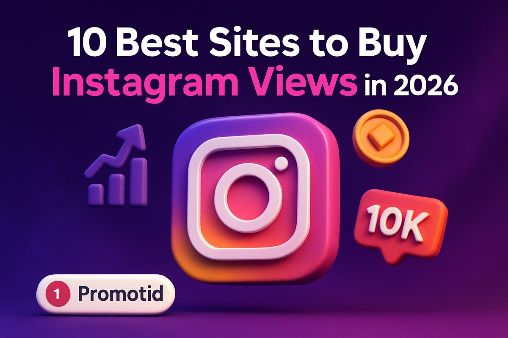

Instagram views are one of the most visible performance signals on the platform. A reel already sitting at 60,000 views triggers curiosity before anyone reads the caption. A video with 190 views gets scrolled past without a second thought. That gap in perceived credibility shapes how real users behave — and it has a direct effect on how the algorithm decides to distribute your content.
This is why creators, businesses, and brand accounts increasingly choose to buy Instagram views as a calculated early-stage lever. The goal is never to manufacture fake success indefinitely. It is to give content enough visible traction to be taken seriously while organic momentum builds underneath it.
The hard part is identifying providers that actually deliver what they claim — real-looking views, safe delivery mechanics, and honest buyer protections. Not every service at a low per-view price is worth the risk. This guide covers the 10 best platforms to buy real Instagram views, ranked on view quality, delivery method, targeting depth, pricing transparency, and what each platform does genuinely better than the rest.
Instagram's algorithm evaluates new content through early engagement signals — views, watch time, saves, shares — to determine how broadly it should be distributed. Content that accumulates high views quickly after publishing gets pushed to non-follower audiences through Reels, Explore, and suggested content placements. Content that gains views slowly or inconsistently does not receive that amplification.
This creates an inherent cold-start disadvantage for new accounts and new content types. Purchasing views strategically addresses that disadvantage. When a post reaches a credible view count early in its lifecycle, it sends stronger distribution signals to the platform and creates a more compelling first impression for real visitors who discover it organically.
Every platform below was assessed against identical criteria. Rankings reflect overall quality, safety standards, targeting capability, and real-world value across different buyer types and use cases.
Promotid has operated in the social media growth market since 2012 and currently supports over 60 platforms. Its Instagram view service distinguishes itself through a level of buyer control that most competitors simply do not offer — particularly around who delivers those views and how they arrive.
The defining capability is country-level geo-targeting. While the majority of view providers deliver from a generic international pool labeled "worldwide," Promotid lets buyers specify countries: the US, UK, Australia, India, Brazil, and much of Europe, among others. For brands running location-targeted campaigns, creators building region-specific audiences, or accounts that need views aligned with a particular market, this precision changes the utility of the purchase entirely. When serious creators decide to buy instagram views with real targeting control rather than accepting a random global mix, Promotid is consistently where that decision leads.
Delivery flexibility is the second standout feature. Promotid supports one-time delivery for immediate impact, monthly recurring packages for sustained growth patterns, and automatic drip delivery that spaces views out over days to mimic organic accumulation. Drip delivery matters because Instagram's internal systems treat gradual view accumulation very differently from sudden spikes — the former looks natural; the latter can attract unwanted attention.
Ordering is cleaner and safer than most alternatives. The platform only requires your public post or profile URL. No passwords, no login access. Checkout handles the rest across a notably wide range of payment options, including a crypto payment route that unlocks an additional purchase discount.
Rushmax has been active in the Instagram growth space since 2011, making it one of the longest-running providers on this entire list. That longevity carries weight in a market where newer services regularly appear and disappear without notice. For buyers who want competitive pricing without sacrificing post-delivery protections, Rushmax delivers consistent and reliable value.
The standout protection is its 60-day refill window — among the most generous post-delivery guarantees available from any mainstream provider. If purchased view counts decline within that period, Rushmax restores them at no additional charge. The platform also goes beyond basic packages, offering standard views, monthly recurring delivery, automatic view options, and a range of additional engagement products including likes, saves, comments, and impressions.
Buzzoid is a well-established name in the Instagram growth market, and its tiered view structure is what keeps it consistently useful for buyers who care about the distinction between quality levels rather than accepting a single undifferentiated product.
Buzzoid offers three tiers: standard, active, and VIP. Standard packages cover the basics at competitive entry pricing. Active packages source views from accounts with stronger engagement histories and more credible profile characteristics. VIP packages go furthest — higher-quality delivery, priority processing, and more robust post-purchase support. This honest tiering gives buyers a real choice at each price point rather than the industry-standard claim that everything is "real" with no meaningful distinction.
iDigic operates exclusively on Instagram, and that singular focus is its defining advantage over generalist multi-platform services. While most growth providers spread their infrastructure across dozens of social networks, iDigic builds everything — delivery systems, quality controls, and support workflows — around how Instagram specifically operates.
The ordering experience is intentionally streamlined: select a package, enter your post URL, complete payment, and wait for delivery. There is no complex targeting setup, no multi-step configuration, and no features you will never use. Active view options and premium packages are available for buyers who require a higher-tier product. A 24-hour support team handles any delivery questions that arise.
SuperViral operates differently from every other service on this list. It is not a package store in the conventional sense — it functions as a managed growth platform designed to deliver sustained, high-quality view accumulation over time rather than one-time bulk delivery.
Rather than sourcing views from a generic pool, SuperViral targets audiences based on your content niche, viewer interest signals, and demographic characteristics, then promotes your content through legitimate channels to attract those viewers. Growth is slower by design, but the resulting views come from accounts with real activity histories. This approach is more aligned with Instagram's platform terms and produces view counts that carry stronger algorithmic weight. For creators who prioritize channel health and engagement quality over raw speed, SuperViral is the most principled option on this list.
Upfolo has been operating in the social media growth space for over a decade. Its longevity is backed by a delivery approach that sets it apart from the majority of providers in this category. Rather than relying on panel-based bulk methods, Upfolo explicitly uses advertising infrastructure to drive views to your content — promoting posts through channels that align more closely with how legitimate Instagram reach works.
The result is a view count that looks like organic promotion rather than a purchased bulk package. Accounts that view content through this method tend to carry more credible profile characteristics than typical bulk-sourced views, which matters both for appearing natural to visitors and for producing stronger signals in Instagram's distribution systems.
Stormlikes is a broad social media growth platform supporting Instagram alongside YouTube, TikTok, Twitter/X, Spotify, and several other channels. For content creators and social media managers handling multiple platform accounts simultaneously, this breadth makes it a genuinely practical centralized solution.
On Instagram specifically, Stormlikes uses a drip-feed delivery model, spacing view delivery across hours or days rather than front-loading everything at once. This gradual pacing is particularly valuable for creators approaching brand partnerships or sponsorship conversations — steady, consistent view growth reads as more organic to potential partners than abrupt spikes that raise credibility questions.
UseViral is a targeted Instagram view service built for accounts that care about audience alignment and content relevance rather than raw view volume. Instead of pulling from an undifferentiated global pool, UseViral identifies and targets viewers through relevant hashtag clusters, competitor account audiences, and interest signals that match your specific content category.
A fitness creator gets views from accounts already engaged with fitness content. A travel photographer receives views from users actively following similar travel accounts. That alignment has downstream value — views from genuinely interested viewers carry stronger engagement potential and produce better algorithmic signals than the same count from random or mismatched accounts.
SidesMedia keeps its value proposition direct and uncomplicated: solid view delivery at competitive per-view rates with no unnecessary setup friction. There are no complex targeting dashboards to navigate and no multi-step configurations to complete. Buyers choose a package, enter their post URL, pay, and receive delivery.
This simplicity makes SidesMedia a strong choice for first-time buyers testing the market before committing to larger orders, accounts that need a quick view boost without advanced requirements, or anyone managing multiple social platforms who values the convenience of a provider covering more than just Instagram.
Twicsy rounds out this list as a dependable, well-established platform with a reputation built on transparent pricing and consistent delivery. Package sizes are clearly defined, pricing is honest before you reach checkout, and delivery timelines are communicated upfront — so buyers know exactly what they are purchasing before committing.
For anyone who has been burned by services that overpromise and underdeliver, Twicsy's direct and predictable approach is a welcome contrast. Customer support is accessible for delivery questions or order concerns, and the platform's sustained track record makes it a trustworthy final option for buyers who value reliability above all other factors.
Every platform on this list was assessed against the same eight-point framework before making the final cut. Price alone was never sufficient for inclusion.
Do views come from accounts with visible post history, realistic profile data, and credible follower ratios — or from obvious placeholder accounts?
Gradual drip delivery consistently outperforms instant bulk drops for account safety and algorithmic compatibility.
No reputable provider should ever request your Instagram password. A post or profile URL is all that is required.
Country-level or niche-based targeting significantly increases the utility and relevance of purchased views for specific use cases.
Package pricing should be clear before checkout, with no hidden fees. The lowest per-view rate is rarely the best overall value once quality and drop rates are factored in.
Clear, enforceable guarantees signal a provider that stands behind its service. No policy at all signals risk.
Platforms with multi-year operating histories offer more accountability than newer entrants with no track record to verify.
Responsive live chat or email support makes a meaningful difference when orders encounter delivery issues.
These steps cover the most common mistakes buyers make when purchasing Instagram views for the first time and how to avoid each one.
Promotid is the strongest overall recommendation for most buyers approaching this market. Its geo-targeting capability, delivery flexibility, no-password security model, and industry-leading buyer protections give it a genuine edge over the majority of providers reviewed here. The combination of these features in a single, well-established platform makes it the most complete option available.
For sustained, audience-quality-focused growth, SuperViral and UseViral are worth exploring as complementary long-term approaches that prioritize niche alignment and viewer relevance over raw volume and speed.
Whatever platform you choose, treat purchased views as an early-stage foundation — not a substitute for a genuine content strategy. Post consistently, engage authentically with your real audience, and let the initial view traction support the organic growth that follows.